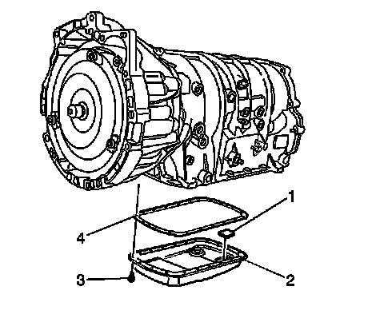
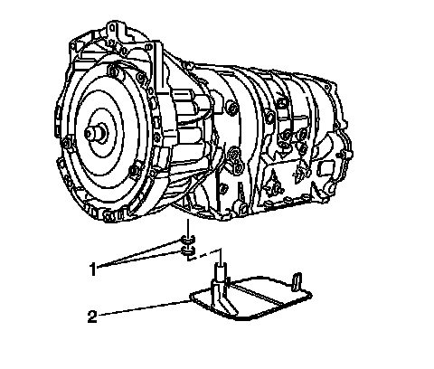

Automatic Transmission Fluid and Filter Replacement
Automatic Transmission Fluid and Filter Replacement
Tools Required
* J 6125-1B Slide Hammer Adapter
* J 23129 Universal Seal Remover
* J 36850 Transjel Lubricant
Removal Procedure
1. Raise and support the vehicle. Refer to Lifting and Jacking the Vehicle (Service and Repair) .
2. Place a suitable drain pan under the transmission fluid pan.

3. Loosen the fluid pan bolts (3) on 3 sides of the fluid pan.
4. Lightly tap the fluid pan (2) with a rubber mallet if necessary in order to loosen the gasket seal.
5. Allow the transmission fluid to drain.
6. Inspect the transmission fluid for discoloration and contamination while draining.
7. Remove the fluid pan bolts (3).
8. Remove the fluid pan (2) and the gasket (4).
9. Clean and inspect the following for damage or wear.
* Magnet (1)
* Pan (2)
* Bolts (3)
* Gasket (4)

10. Remove the fluid filter (2). Use a long screwdriver in order to pry the fluid filter neck out of the seals.
11. Remove the 2 fluid filter seals (1) using J 23129 and J 6125-1B .
Installation Procedure
1. Install 2 NEW fluid filter seals (1), onto the transmission fluid filter neck. Coat the new seals with a small amount of J 36850 or petroleum jelly before installation.
2. Install the transmission fluid filter (2) into the case.
Important: Fluid pan gaskets are reusable. Replace the gasket ONLY if the sealing surface is damaged.
3. Install the fluid pan (2) and the gasket (4) at the same time.
Notice: Refer to Fastener Notice (Fastener Notice) .
4. Install the fluid pan bolts (3).
Tighten the bolts to 11 N.m (97 lb in).
5. Fill the transmission to the proper level. Refer to Transmission Fluid Check (Transmission Fluid Check) .
6. Lower the vehicle.
7. Inspect the oil pan gasket for leaks.